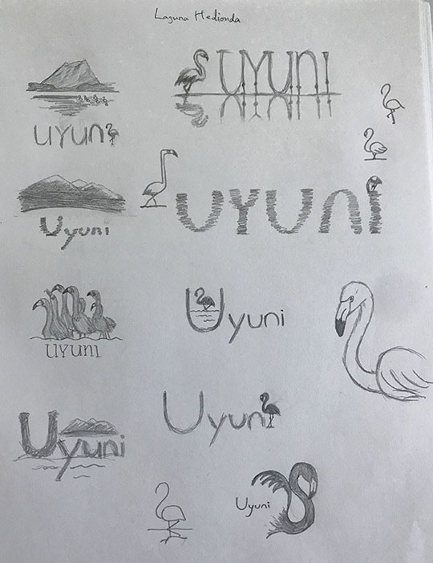
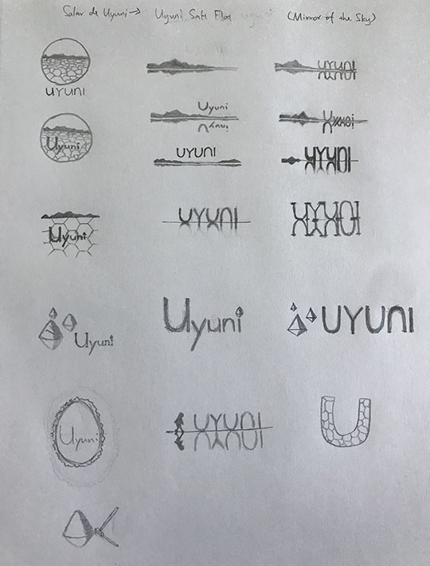

Tourism Logo
ART 127-Graphic Symbolism
In this assignment, we chose a city that we want to travel to and design a tourism logo for it. After sketching some of the most famous salt flats and flamingos in the area, I chose the bird with travel significance.
Service: Graphic Design
Skills:Sketching, Adobe Photoshop, Adobe Illustrator